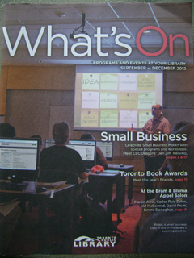

ボストンピザのオーナー、JIM TRELIVING氏の講演と肉の安全性に関する知られざる事実
トロントはハリケーンの影響をうけ、連日雨が降っている。週間天気予報をみても雨マークがずらり。子供達（大人も）にとって一大イベントであるハロウイーンを目前にし、子供達はさぞ心配していることだろう。
さて、先日は図書館で開かれた講演を聞きにいってきた。
私が図書館に行くと必ずもらってくるのが⬇のパンフレット。

２ヶ月に一度発行されていて、図書館で開かれる様々な催しが載っている。そしてその催しは基本的には無料。
今回はスモールビジネスに焦点をあてていて、その一環としてボストンピザのオーナー、JIM TRELIVING氏の講演が開かれた。
会場はヤング＆ブロアーにあるリファレンスライブラリーの２階、SALONというところで、ワインやお酒が買え、リラックスした雰囲気で講演を聞くことができる。この日は広い会場は満席だった。
JIM TRELIVING氏は、ボストンピザのオーナーであり、CBCの人気テレビ番組、DRAGON'S DENのオリジナルメンバーでもある。そして、私が欠かさず見ている同じくCBCのテレビ番組、THE DECISIONにも出演している。このTHE DECISIONは、倒産寸前の会社を訪れ、その会社が立て直すに値する場合は投資する、という興味深い番組。
さて、講演のほうはというと、JIM TRELIVING氏は気さくな雰囲気で、自身の生い立ちからビジネスを立ち上げるまで、そしてその後の逸話が語られた。話しがうまく、１時間という長さにもかかわらず退屈させない。講演後の会場からの質問に対する答えのなかで、
We are living in the best country in the world.
と力強く断言すると、会場からは拍手がわき起こった。その後もなんどかこのフレーズを熱く繰り返していたのが印象的だった。
さて話しはかわるが、我が家で同じく欠かさず観ているCBCの番組に、THE MARKETPLACEというのがある。
これはすごい番組で、企業が提供するサービスや商品を独自に調査した結果を名指しで公表して、悪質なケースについては直接問いただすというもの。
隠しカメラやマイクは当たり前で不誠実さを暴きだすのは観ているこちら側もスカッとするが、唖然とすることもしばしば。
先日は、牛肉の汚染について特集していた。
最近牛肉のリコール騒ぎでE. coliという言葉を頻繁に聞くが、まさにこの病原性の大腸菌の汚染についての調査だった。
肉を柔らかくするために、MEAT TENDERIZEということがされるのだが、これが病原性の大腸菌を蔓延させる原因になっているということだった。
このMEAT TENDERIZEとは、巨大な無数の針がセットされている機械のなかに肉の塊を通すと、ぐさぐさと針が塊肉全体に突き刺さり、柔らかい食感が得られるというもの。
ところが、汚染された牛肉を機械に通してしまった場合、針に病原性の大腸菌が残り、汚染されていなかった牛肉に付着していくのだ。
番組のなかでは、汚染されたステーキによって子供を亡くされた方と、子供に障害が残ったケースを紹介していた。
そして、スーパーで売られているステーキ肉をみても、このMEAT TENDERIZEがされたかどうかというのは一見してはわからないのだ。パッケージにも表示されているわけでもないので、消費者が知る術はないのが現状。
そこで番組では各スーパーに直接聞いてみたのだが、はっきりとした回答が本社から得られたのはCO-OPの一社だけ。MEAT TENDERIZEは一切していないということだった。
寿司ネタの偽装についての過去記事はコチラ（Torontoでも寿司ネタ偽装）。